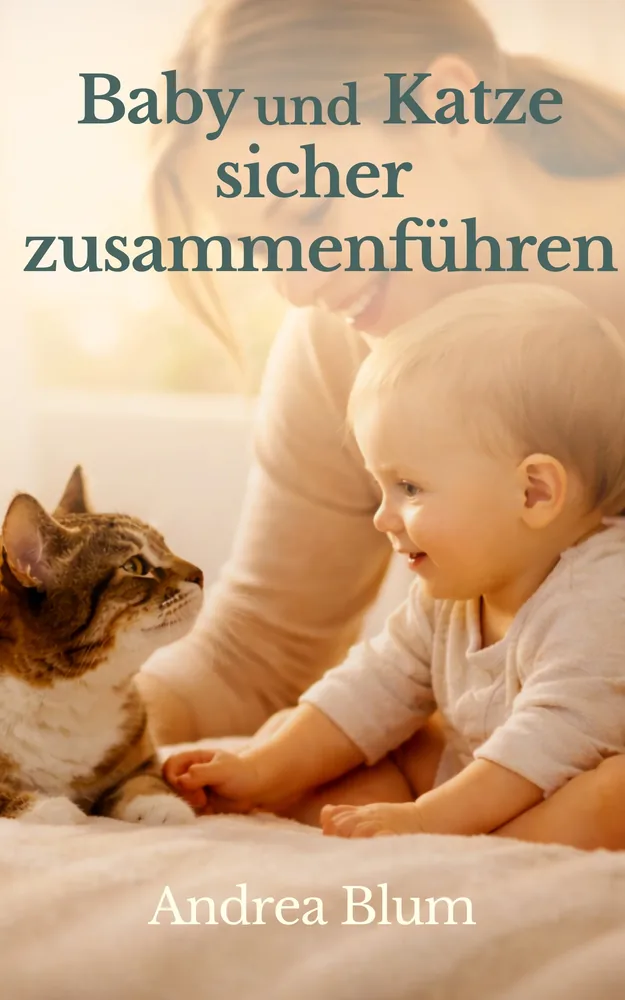
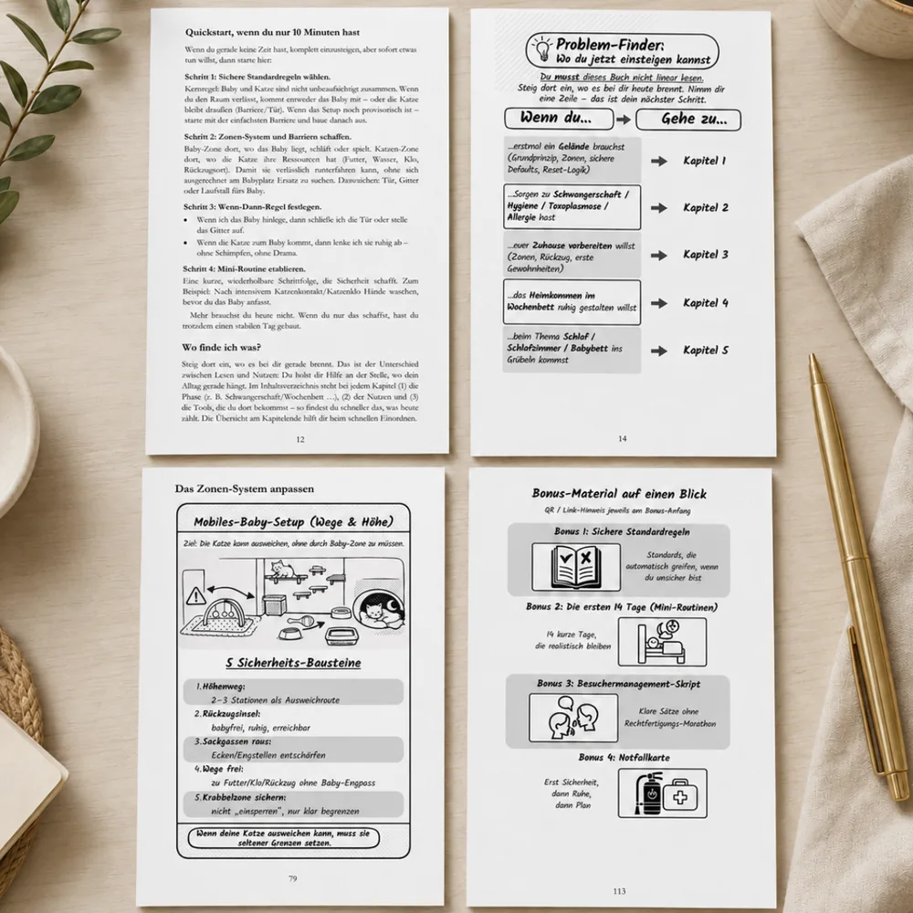
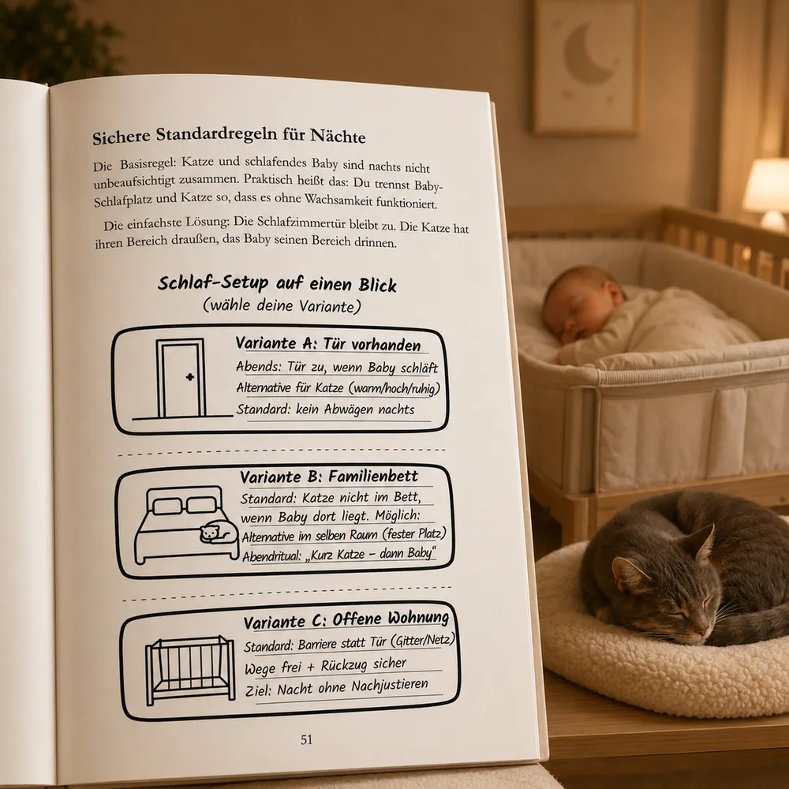
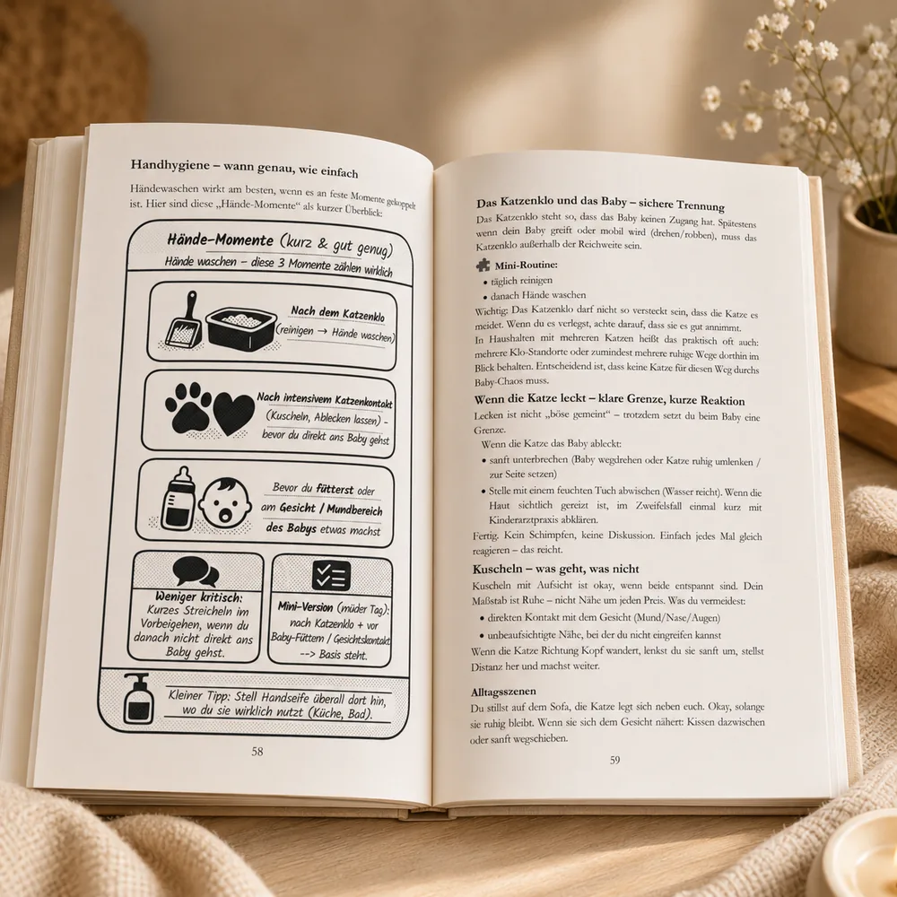
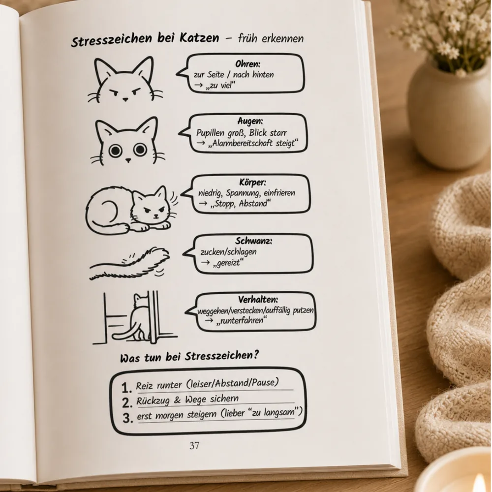
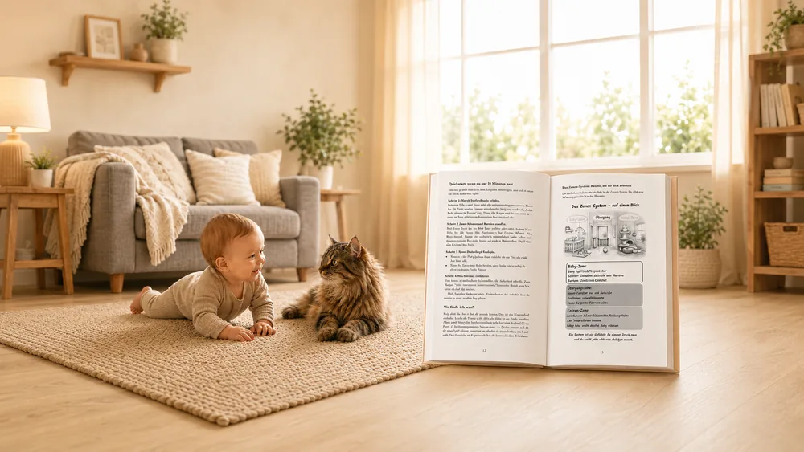
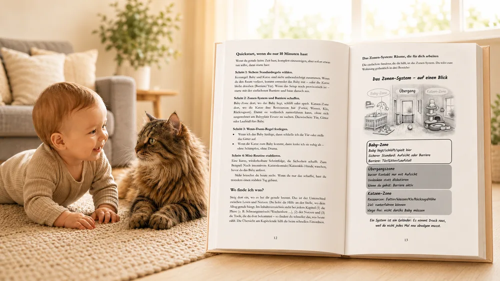

Taschenbuch
- Umfang
- 132 Seiten
- Preis
- 16,99 €
- Datum
- 20. März 2026
- ISBN-13
- 979-8252709192
- ASIN
- B0GTDN1458
- Vertrieb
- erhältlich über Amazon
Pressebereich
Andrea Blum · Farbenfrohe Lesewelt Verlag
Ein alltagsnaher Praxisratgeber, der Familien von der Schwangerschaft bis ins Kleinkindalter mit einem System aus Zonen, Standards und Wenn-Dann-Regeln begleitet – statt mit einer losen Sammlung einzelner Tipps.
Stand: Juni 2026
Sprache: Deutsch · 1. Auflage · Zielgruppe: werdende Eltern und Familien mit Katze, Schwangerschaft bis Kleinkindalter · Imprint: Farbenfrohe Lesewelt Verlag.
Verlag/Imprint: Farbenfrohe Lesewelt Verlag. Herstellung und Vertrieb erfolgen je nach Ausgabe über Amazon KDP beziehungsweise BoD.
Von Schwangerschaft bis Kleinkindalter, ohne jedes Thema isoliert zu betrachten.
Zonen, feste Standards und Wenn-Dann-Regeln geben wiederkehrenden Situationen Struktur.
Babysicherheit und Katzenbedürfnisse werden zusammen organisiert.
Mit transparenter Trennung zwischen Alltagshilfe und fachlicher Beratung.
Der Ratgeber begleitet Familien mit Baby und Katze durch typische Fragen zu Schwangerschaft, Schlafplatz, Aufsicht, Rückzug, Hygiene und mobiler werdendem Kind. Statt einzelner Tipps bietet das Buch ein ruhiges Ordnungssystem aus Zonen, Standards, Checklisten und Wenn-Dann-Regeln. Es ersetzt keine medizinische, tierärztliche oder individuelle Verhaltensberatung.
Wie sich Familien vorbereiten können, ohne die Katze pauschal zum Problem zu machen.
Warum einzelne Internettipps oft keine tragfähige Alltagsroutine ergeben.
Wie klare Standards Entscheidungen in müden Momenten erleichtern.
Wie der Ratgeber Alltagshygiene, medizinische Fragen und die Grenzen allgemeiner Orientierung voneinander trennt.
Warum Regeln, Rückzugsorte und Begegnungen mit der Entwicklung mitwachsen müssen.
Die browserbasierte Leseprobe vermittelt einen direkten Eindruck von Ton, Aufbau und Arbeitsweise des Ratgebers.
Patrick Guttenberger
Presse- und Rezensionskontakt für Andrea Blum
Farbenfrohe Lesewelt
E-Mail: farbenfrohe-lesewelt@web.de
Mögliche Anfragen: gedrucktes oder digitales Prüf-/Rezensionsexemplar, kurze schriftliche Interviews, redaktionelle Rückfragen oder Statements, Buchdaten, Cover und Pressematerial.
Das Material darf honorarfrei im Zusammenhang mit redaktioneller Berichterstattung über das Buch oder den Farbenfrohe Lesewelt Verlag verwendet werden. Sinnentstellende Bearbeitungen und eine davon unabhängige kommerzielle Nutzung sind nicht gestattet.

Inhaltliche Einblicke in Aufbau, Struktur und konkrete Arbeitsweise des Ratgebers.




Darstellung einer Buchseite aus „Baby und Katze sicher zusammenführen“.
Beispielseite herunterladenGesamtes Pressepaket herunterladen
KI-/Compositing-basierte Produktvisualisierung. Nicht als reales Familien- oder Dokumentarfoto verwenden. Nicht Bestandteil des Standard-Pressepakets.


Wenn ein Baby kommt, verändern sich Routinen, Räume und Aufmerksamkeit – auch für die Katze. Viele Familien suchen dann zwischen alarmierenden Warnungen und einzelnen Internettipps nach einem tragfähigen Mittelweg. Der Ratgeber „Baby und Katze sicher zusammenführen“ bündelt typische Fragen in ein Alltagssystem: Baby-Zone, Katzen-Zone und Übergangsbereiche, klare Regeln für Schlafplätze und Aufsicht, Rückzugsorte für die Katze, Hygieneroutinen und einfache Wenn-Dann-Regeln für müde oder unklare Situationen.
Das Buch richtet sich an werdende Eltern und Familien, die ihr Baby schützen und ihre Katze weiterhin als Teil des Familienlebens mitdenken möchten. Es ersetzt keine medizinische, tierärztliche oder individuelle Verhaltensberatung. Stattdessen hilft es, wiederkehrende Entscheidungen vorzubereiten, sensible Themen einzuordnen und Fragen für Fachpersonen klarer zu sortieren.
Andrea Blum schreibt alltagsnahe Ratgeber, die komplexe Familienfragen in klare Routinen und nächste Schritte übersetzen. Ihr Ansatz verbindet sorgfältige Quellenarbeit mit praktischer Orientierung und transparenten Beratungsgrenzen.
Andrea Blum veröffentlicht unter Pseudonym; Presse- und Interviewanfragen werden über Farbenfrohe Lesewelt koordiniert.
Andrea Blum ist außerdem auf Goodreads und LovelyBooks geführt.
Mehr zur Entstehung, den Quellenstandards und Beratungsgrenzen steht auf der Seite Über den Ratgeber und seine redaktionelle Grundlage.
Hinweis: Alltagsratgeber – ersetzt keine medizinische, tierärztliche oder individuelle Verhaltensberatung.
{kind=link}
{kind=link}
{kind=link}
{kind=link}
{kind=link}
{kind=link}
{kind=link}
{kind=link}
{kind=link}
{kind=link}